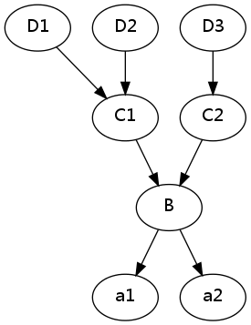
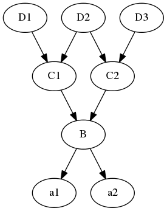

python笔记
Table of Contents
python的编码规范
- 用4个空格缩进
- 每一行不超过80个字符,当一行超过80个字符时,可以用\来连接下一行,当对一个二元操作符断行时,应该将操作符留在 上一行, 对于函数定义以及调用,那么根据括号来对齐.
- 模块内容的顺序：
- 模块说明和docstring
- import
- __all__(optional)
- globals and constants
- 其他定义
- 一行只导入一个模块(不推荐 import sys, os)
- 模块导入顺序: 标准库, 第三方库, 自己编写的库. 三者之间用空行分割, 而且三者应该紧挨着模块字符串的后面
- 模块级别的函数定义, 类定义用2个空行分割, 类方法用一个空行分割
- 空格的添加:
二元操作的两边各放一个空格, 但是对于有多个操作符的情况,可以只在低优先级 的操作符两边放空格
i = i + 1 submitted += 1 x = x*2 - 1 hypot2 = x*x + y*y c = (a+b) * (a-b)
标点符号的后面放空格,前面不要放空格,在(, {, [之后以及), }, ]之前不要放空格,函数调用时函数名与左括号之间 不要放空格
Yes: spam(ham[1], {eggs: 2}) No: spam( ham[ 1 ], { eggs: 2 } ) No: spam (ham[1], {eggs:2}) Yes: if x == 4: print x, y; x, y = y, x No: if x == 4 : print x , y ; x , y = y , x Yes: spam(1) No: spam (1) Yes: dict['key'] = list[index] No: dict ['key'] = list [index]- 不要在用于指定关键字参数 (keyword argument) 或默认参数值的 '=' 号周围使用空格。
- 命名
- 模块名与包名: 全部用小写字母, 模块名可以添加下划线来增加可读性, 包名不建议添加下划线,名字尽量短一点,因 为有些文件系统对文件长度有要求
- 类名: 使用驼峰命名法,如果是内部类,则在前面加一个下划线
- 异常名: 异常是类, 所以使用驼峰命名法,但是必须有Error后缀
- 函数名: 必须是小写字母, 用下划线去增加可读性
- 类方法: 和函数名相同, 对于non-public函数, 可以在前面加一个下划线, 前面加两个下划线主要是避免与子类命名 冲突(一般用户命名变量不推荐使用)
- 常量名: 全部大写, 用下划线分割增加可读性
python 文件处理
open打开文件时的选项：
- w, w+: 如果文件已存在，那么二者都会将文件内容清除
r+: 如果写文件，那么会从当前位置覆盖写，而不是插入，当用该模式打开文件，读 入文件内容，然后用覆盖该文件时应使用如下代码
with open(filename, 'r+') as f: content = f.read() new_content = do_something() f.seek(0) f.write(new_content) f.truncate() # 删除当前读写位置到文件末尾的内容
- b: 在python2中，linux指定与不指定问题不大，但是建议对于二进制文件比如图片还 是指定该选项比较好，避免移植到windows出现问题，在python3中，对于文本文件， 如果不指定该选项，那么会返回unicode string， 而如果指定该选项则返回byte string, 所以对于二进制文件,你必须指定b
遍历一个文件夹的所有文件
import os import os.path import os from os.path import join, getsize for root, dirs, files in os.walk('python/Lib/email'): for afile in files: full_name = os.path.join(root, afile) do_something(full_name)
作用域规则
- if, for, while等不会创建新的作用域, 也就是说它们不同于c中block structure.
- 每一个模块会创建一个模块作用域
- 每一个函数(包括嵌套定义的函数) 都创建一个函数作用域
- 在一个作用域内第一次赋值会创建一个新的 绑定, 以后对该变量的赋值都是对该 绑定的 修改.
- 在内层作用域可以引用外层作用域的变量, 但是你不能修改外层作用域的变量, 因为 你在在内层作用域一旦对该变量使用赋值,那么就是创建一个新的绑定, 所以为了改 变模块作用域中的变量你必须使用global来申明, 但是你永远也不能在内层函数中改 变外层函数的变量(当然你可以通过subscript或者attribute來修改可变对象的值, 只是这是引用的关系, 和作用域关系不大),这是python设计的不够好的地方.
杂七杂八
除法
- X/Y: python2中的行为和C语言类似，3/2=1, 3/2.0=1.5; 在python3中，这是真除法，也就是会一直保留小数位,3/2 = 1.5
- X//Y: 在python2以及3中都是floor除法，也就是取整数区间的左边边界，5//2 = 2, 5//-2 = -3
一些内置函数的解释
dir
获得对象的所有属性,也就是顶层的那些names
globals And lolcals
- globals(): 返回一个字典,字典包括当前模块(也就是调用globals()的模块)的所有模块级属性, 同时还包 括'builtins'属性, 还包括几个特殊变量__file__, package, doc
- locals(): 这个只返回局部空间(比如函数的局部变量)的变量与值的字典,注意这个字典不能修改,如果强行修改会引发 严重后果,比如解释器崩溃
getattr,__getattr__,__getattribute__
__getattr__只有在属性不存在时才调用,该方法用的多
class ClassName(object): def __getattr__(self, name): dosomething() return super(ClassName, self).__getattr__(name)
- __getattribute__是每一次obj.attr时都会调用,所以它可以拦截所有的属性查询, 用的很少
- getattr: 原型getattr(object, name[, default]), getattr(x, 'foobar')等价于x.foobar优势就在于getattr可以 使用字符串,注意如果是获得类实例的方法,那么self参数就可以忽略了,只需要传入除self之外的其它参数就好
__import__(接字符串而不是name)
原型： __import__(name[, globals[, locals[, fromlist[, level]]]])
- fromlist： 指定需要从name中导入的属性名，一般而言也就是from module1 import attr1, attr2…中的 attr1,attr2… 这个参数一般需要指定
- level: 指定使用绝对导入还是相对导入，-1是默认会同时尝试二者，0是绝对导入，正数是相当于加几个. ,比如如果 为1,那就是加一个.也就是当前目录，如果是2,那就是加两个点，在当前模块的父目录中导入，和import中的相 对导入语法类似
# snippet 1 from spam.ham import eggs, sausage as saus # snippet 2 _temp = __import__('spam.ham', globals(), locals(), ['eggs', 'sausage'], -1) eggs = _temp.eggs saus = _temp.sausage
两段代码等价, __import__接的是字符串
装饰器
装饰器的基本形式
def deco(func): def _deco(): print("before myfunc() called.") func() print(" after myfunc() called.") return _deco @deco def myfunc(): print(" myfunc() called.")
上面的@deco 等价于 myfunc = deco(myfunc), 这就是装饰器的本质所在, 注意_deco必须与myfunc有相同的参数,因为 装饰后调用myfunc实际是调用_deco, 当然_deco可以使用*args, **kargs这样的可变参数
使用类作为装饰器(推荐的做法)
class deco(object): def __init__(self, func): self.func = func def __call__(self, *args, **kwargs): print("before myfunc() called.") func() print(" after myfunc() called.") @deco def myfunc(): print(" myfunc() called.")
myfunc = deco(myfunc) 所以myfunc就是一个deco类的实例，然后myfunc(*args, **kwargs),实际就是调用类实例 的__call__方法
使用类作为装饰器装饰类方法
下面的代码也可以装饰非类方法,也就是装饰普通函数,也就意味着下面的代码可以替代2,因为如果装饰的是普通函数, 那么会直接调用该函数,所以不会触发descriptor的__get__方法
class deco(object): def __init__(self, func): self.func = func def __call__(self, *args, **kwargs): print("before myfunc() called.") self.func(*args, **kwargs) print(" after myfunc() called.") def __get__(self, obj, objtype): import functools return functools.partial(self.__call__, obj) class Test(object): @deco def myfunc(self): print(" myfunc() called.")
这与2最大的区别就是使用了descriptor，也就是__get__, 之所以这么写是因为，如果像2一样，那么就没有给myfunc 传递self参数，所以python会报缺少参数的错误，下面解释一下代码运行的流程，deco装饰后，myfunc变成一个deco的 类实例，注意deco定义了__get__, 所以myfunc就变成了一个descriptor对象，当你使用test_obj.myfunc(*args, **kwargs)调用的时候，也就触发了test_obj.myfunc的属性搜索，那么根据descriptor的规则，就变成了 myfunc.__get__(test_obj),该函数返回已将test_obj绑定到myfunc.__call__的第一个参数的partial 函数，接着这个 函数在接受*args, **kwargs参数，总之就是通过descriptor将test_obj传递给了__call__,从而消除了缺少self的问题
给装饰器添加参数
def deco(arg): def _deco(func): def __deco(): print("before %s called [%s]." % (func.__name__, arg)) func() print(" after %s called [%s]." % (func.__name__, arg)) return __deco return _deco @deco("mymodule") def myfunc(): print(" myfunc() called.") @deco("module2") def myfunc2(): print(" myfunc2() called.") myfunc() myfunc2()
需要给装饰器加参数.那么就给多添加一个嵌套函数, 这个参数可以是类以及其它对象
functools模块
wraps: 这个装饰器可以确保函数在装饰后属性的一致,比如上面的例子 myfunc=deco(myfunc), 那么此时 myfunc的__name__, __doc__等属性都不在是原myfunc的值了,而是_deco的值,每一次装饰之后这些函数对象的元信 息都丢失的话,那么这显然是一个大问题,而wraps可以用来应付这个问题
import functools def deco(func): @functools.wraps(func) def _deco(): print("before myfunc() called.") func() print(" after myfunc() called.") return _deco @deco def myfunc(): print(" myfunc() called.")
@functools.wraps(func)这行代码可以保证,通过装饰器调用后,函数__name__, __doc__仍然和原来的函数一致
partial: 有时候你知道一个函数的一部分参数,这个时候你可以先绑定这些参数,绑 定这些参数之后会返回一个partial对象,你可以当这个对象就是一个以绑定了一些参 数的函数,就是函数式语言中的curry,partial大体上等于以下代码
def partial(func, *args, **keywords): def newfunc(*fargs, **fkeywords): newkeywords = keywords.copy() newkeywords.update(fkeywords) return func(*(args + fargs), **newkeywords) newfunc.func = func newfunc.args = args newfunc.keywords = keywords return newfunc
迭代器
迭代器的基本知识
迭代器对象是序列对象的一般化,每一个迭代器对象都有一个next方法,该方法每调用一次都会返回下一个元素,当没有元素 可返回时要触发StopIteration异常,这就是迭代对象的实质了
生成器generator
从大多数方面看生成器函数和普通函数一致,它们二者最大的不同时,普通函数是直接通过return返回一个值,而生成器函 数是通过yield返回一个迭代器对象,所以每一个生成器函数调用后都是返回一个迭代器对象,这是本质的区别
for循环的迭代过程
for item in obj语句的执行过程其实是这样
- 先运行iter(obj) 获得迭代器对象 iter_obj
- 重复的调用iter_obj.next() 直到出现StopIteration异常
- 如果上述两步已成功,那么for循环就结束了,如果上述两步没成功,这意味着obj不支持迭代协议,那么for就会尝试使用 下标来遍历那么会使用下标来遍历,也就是从0开始每一轮循环都对下标加一,而且每一轮循环都使用obj[i] 来访问元 素,直到触发异常
with
基本模型：
with exp as name:
body
先对exp求值得到val，然后调用val的__enter__ 方法，最后将val绑定到name，接着运 行body，在要退出body时运行val的__exit__方法。File对象已经自带了这两个特殊方法， 所以打开文件时，with用的很多。
模块
模块的_X与__all__: 当调用from XX import * 时, 如果指定了__all__, 那么就只导 入__all__中的名字,如果没指定__all__,那么导入所有除了以下划线开头的全部模块级 名字, 也就是说不会导入 _X 这样的名字
relative import
相对导入必须使用from xxx import yyy 的形式, 而且xxx必须以点号开头, import xxx 的形式都是绝对导入, python默认是绝对导入,也就是搜索sys.path, 一般来说 sys.path的第一项就是主模块的所在的目录,相对导入需要以下的语法:对于如下的一个 目录结构
package/
__init__.py
subpackage1/
__init__.py
moduleX.py
moduleY.py
subpackage2/
__init__.py
moduleZ.py
moduleA.py
假设在moduleX.py or subpackage1/__init__.py中，那么下列的相对导入是合法的
from .moduleY import spam from .moduleY import spam as ham from . import moduleY from ..subpackage1 import moduleY from ..subpackage2.moduleZ import eggs from ..moduleA import foo from ...package import bar from ...sys import path
一个点代表当前文件所在的目录，两个点代表当前文件所在目录的父目录，以此类推， 注意相对导入使用__name__属性实现的，所以对于执行模块必须小心，因为他的__name__属 性是__main__, 所以这些模块中不能使用相对导入
OOP
基本OOP代码示例
类,类的实例和模块都只是一个命名空间,命名空间的属性都可以修改,所以非常灵活,对于基于类的对象而言,可以使用dir内 置函数来查看命名空间, 类与类的实例都是对象,二者都是使用字典对象实现的命名空间,二者的__dict__属性基本就是命名空间 字典, 看如下代码:
class Test(object): """ a Test Class """ val1 = 1 val2 = 2 def __init__(self, arg1, arg2): """ """ self.arg1 = arg1 self.arg2 = arg2 def display(self): """ """ print self.arg1, self.arg2 obj1 = Test(1, 2) print dir(Test) print print dir(obj1)
val1, val2, init, display都是类Test本身的属性, 而arg1, arg2就是类实例(obj1)的属性,实际上self产生的就是 类实例对象的属性, 当然类的实例也会继承 类的属性
属性搜索树
当调用obj.attr时,python有一个属性的搜索过程,比如下面的代码
class D1(object): pass class D2(object): pass class D3(object): pass class C1(D1, D2): pass class C2(D3): pass class B(C1, C2): pass a1 = B() a2 = B()
上面的代码会构成一颗属性搜索树:

因为类本身也是对象,所以类本身也有属性,类的属性就是类的方法,以及类的变量, 比如当调用a1.x时,那么搜索的过程就 是这样的: a1, B, C1, D1, D2, C2, D3注意这是深度优先搜索,python的经典类与新式类都是这种搜索模式，但是新式类 有一个diamond pattern，也就是钻石模式，这种模式下有一个以上的超类会通往相同的更高层次的超类，这时候会使用 广度优先搜索(只是有相同超类的那一部分)，举个例子：

如上图所示，如果C2有个w属性，D2也有个w属性，那么当使用a1.w进行属性搜索时，如果使用深度优先搜索，那么会得到 D2.w， 但是C2是D2的子类，并且重载了w属性，这种情况下应该用子类的属性也就是C2的w属性，钻石继承就是为这种情 况准备的，在这种情况下，在C1,D2, C2会使用广度优先算法搜索，这样就可以先得到C2.w .这个特例需要注意
类的设计
is a
如何现实中两个事物是is a的关系，那么就应该用继承，比如teacher is a person，那么Teacher就应该继承Person
has a
比如一个商店有商品，有营业员，有顾客，那么商店与商品，营业员，顾客就是has a的关系，这时候应该使用组合，也 就是说商店是一个容器，在该容器对象的构造函数中创建营业员对象，创建商品对象，创建顾客对象，具体到python就 是在__init__中创建这些对象
常见的运算符重载
- __getattr__ setattr___使用obj.attr时如果该属性obj中没有attr属性，这时会调用__getattr, __setattr___会 拦截所有的属性赋值，也就是obj.attr = val这样的语句都等价于obj.__setattr___('attr', val)，这是 和__getattr__不同的地方，要特别注意
- __getitem__ setitem_ 当出现x[i], x[i] = val, 会分别调用上述方法， 当使用for 迭代时会先尝试__iter__, 如果行不通，那么就使用索 引，也就是用不断递增的索引调用__getitem__, 直到出现IndexError
- __iter__ 必须返回一个迭代器对象，一个拥有next方法的对象就是迭代器对象，如果使用for 在该对象上迭代，它会先使用 iter内置函数来调用__iter__ 方法获得迭代器对象，然后重复的调用该迭代器对象的next方法，直到该next方法产生 StopIteration异常。
- __call__ 将类实例作为函数调用时就是使用的该方法，比如obj是一个类实例，那么obj('a', 'b')等价于 obj.__call__('a','b'),这是一个很常用的方法
Descriptor
任何对象只要定义了__get__, set, __del__三者之一，那么就是descriptor，这 是一份不错的tutorial， 示例代码:
class RevealAccess(object): """A data descriptor that sets and returns values normally and prints a message logging their access. """ def __init__(self, initval=None, name='var'): self.val = initval self.name = name def __get__(self, obj, objtype): print 'Retrieving', self.name return self.val def __set__(self, obj, val): print 'Updating' , self.name self.val = val class MyClass(object): x = RevealAccess(10, 'var "x"') y = 5
输出
>>> m = MyClass() >>> m.x Retrieving var "x" 10 >>> m.x = 20 Updating var "x" >>> m.x Retrieving var "x" 20 >>> m.y 5
上例中 m.x 是一个descriptor，因为它是RevealAccess的类实例，而该类定义了__get__与__set__,所以 m.x 实际上等价 于 x.__get__(m)
metaclass
在python中类也是对象，生成instance的叫class，生成class的就叫metaclass。type就是 python中内建的一个metaclass
python异常
只说明基于类的异常, 老版的python中基于字符串的异常不考虑
try … except语句
try:
main-block
except class1:
handler1
except class2, instance:
handler2
except (class3, class4):
handler3
except (class5, class6), instance:
handler4
except:
handler5
else:
else-block finally: finally-block
python2.5以后版本才可以else,finally混在一起,执行try 中语句块时如果没有出现异常,那么就执行else 语句块,如果出 现了异常,那么就从上到下的匹配ecxept子句,最后执行第一个匹配的except 语句块, finally是无论是否发生异常,以及无 论是否捕捉了异常都会执行的
raise
raise语句的几种形式
- raise : 重新触发上一次产生的异常
- raise instance : 触发为name的异常
- raise class, instance : 和2类似,只是data是额外数据
上述的instance应该是一个异常类的实例,目前第二种最常用,为了兼容raise instance还有以下的几种衍生形式
- raise class : 等同于 raise class()
- raise class, arg :等同于raise class(arg)
- raise class, (arg1, arg2,…) : 等同于raise class(arg1, arg2,…)
异常
异常都是类, exceptions must be old-style classes or derived from BaseException.也就是说,要么是老式类,要么 是BaseException的子类,实践中用户自定义的类最好继承于Exception,并且必须以Error结尾, 注意except语句是基于超 类匹配的
python中文处理
中文处理一直是一个比较棘手的问题,各种乱码一直让程序员苦不堪言,这里主要介绍 python中文处理的一般原则, 先介绍几个基本概念(强烈建议看看这篇文章):
- unicode: 简单点说你可以将unicode看成一种映射,地球上的每一个符号都在unicode 中有一个数(准确的说叫code point)与之对应
- utf8, utf16: 刚刚说了地球上的每一个符号在unicode中有一个数与之对应,那么这 个数如何存储在计算机上呢?utf8, utf16, utf32就是存储策略
- big5, gb2312等: 这些都是各个地区自行发明的双字节码,也就是两个字节代表一个 符号
python字符处理的基本概念:
- byte string: 字节流, utf8,utf16, gb2312等编码后得到的string都是字节流,通过 decode方法可以得到unicode string
- unicode string: unicode字符串的每一个字符都是一个code point, 它可以通过 encode方法转换为各种byte string
因此python中文处理的实质就是在byte string与unicode string之间来回转换, 因为 python解释器在解释python源文件时,也是需要编码信息的,所以在文件的前两行必须指 定编码信息(coding:utf8), 指定的编码必须与python源文件保存时的编码一致
python2与python3的区别:
python2中字面字符串是byte string, 而3中是unicode string
ss = '你好' # python2为byte string, python3为unicode string ss = u'你好' # python2得到unicode string ss = b'你好' # python3得到byte string
对二者名称不同
category python2 python3 byte string str bytes unicode string unicode str - 读取文件时,python2得到byte string, 而python3调用open时如果指定了b则得到 byte string, 如果没有指定b, 那么就会使用local.getpreferredencoding()返回的 编码方式来decode,然后得到unicode string. python3中调用open时有一个可选参数 来指定解码方式..
- 混合时的处理方式不同,如一个byte string与一个unicode string相加,那么python2 会使用sys.getdefaultencoding()返回的编码方式来decode那个byte string, 然后 与unicode string相加得到一个unicode string,但是python3会返回异常因为 python3不允许二者混合.
一些很诡异的问题
传引用
gg = None def test(aa={}): print aa global gg gg = aa test() gg["hello"] = "world" test()
第一次调用test, aa是{}, 第二次调用就是{"hello": "world"}了, 所以默认参数可是 可变对象时,要特别注意, 一定要确定是否需要使用copy.
一些标准库的使用说明
python 正则表达式
python的正则表达式是通过re这个标准库支持的,这是一篇写的不错的文章, 我可耻的用evernote保存下来 了,上面有原文章的连接.
logging
和log4j类似,先说几个基本概念
基本概念
- Logger: 用户程序主要调用的就是该类的实例的方法
- Handler: 指定日志应该保存到何处，比如console,file等等.
- Filters: 指定过滤条件,他可以确定哪些日志输出
- Formatters: 确定日志格式的
logger层次关系
获得logger一般使用 logging.getLogger 这个api, 它会接受一个name参数, name
如果不指定那么获得root logger, 假设如下代码:
import logging root = logging.getLogger() logger1 = logging.getLogger("aa") logger2 = logging.getLogger("aa.bb")
root是所有logger的父logger, 所以root是logger1的父logger, logger1又是
logger2的父logger, 实际上就是将logger像python的模块那样建立层次结构, 子
logger的消息会传递给父logger, 所以你运行这行代码 logger2.info("hello.."),
那么消息也会传递到logger1, root, 如果这两个logger的设置允许输出消息,那么该
消息可能logger2,logger1,root分别输出
日志输出的过程
假设你运行 logger.info("hello"), 那么这条消息如何输出呢?
- 如果logger的level比info高,那么不输出, 如果有注册的filter返回false那么不 输出.
- 将消息发送给注册在logger上的所有handler,有handler来局定消息如何处理
- 对单个handler而言,如果hander的level比info高,那么不输出,有注册的filter返 回false那么不输出,否则就输出
不管logger是否输出该消息,该消息都会发往父logger.
常用api
- logging.basicConfig: 用来设置root logger的handler, 如果发现handler已设置,那 么什么也不做.
- logging.getLogger: 用来创建logger, 如果参数为空,那么返回root logger.
logger对象的方法:
logger.debug(msg, *args, **kwargs): msg是字符串,其中可以包含%s, %d这样 的格式化信息, args包含提供给msg的字符格式化参数, kwags中有两个key会检查:- exc_info: 如果为True, 那么logger会调用
sys.exc_info来获得一个记录异 常信息的三元组, 接着就会将三元组记录的异常调用栈记录进日志, 注意 只在 except语句块中有效, 因为你必须在处理异常时, sys.exc_info才能获得调用栈. 当然你可以明确的指定一个三元组, 而不是简单的指定True, 这样logger就会使 用你指定的三元组的异常信息,而不是调用sys.exc_info来获得, 因此也就 不存在只在except块有效的限制. - extra: 指定参数来初始化log record, 可以用它来修改本条日志的一些格式
- exc_info: 如果为True, 那么logger会调用
- logger.info
- logger.warning
- logger.error
- logger.critical
多线程
Thread
threading
threading是一个更高层的模块，它使用更加方便，所以一般情况都是使用该模块
- threading.Thread: 要创建一个线程，那么需要先创建threading.Thread的子类，并且重写它的run方法，每一个 Thread对象都要调用start方法，该方法启动线程，该线程会运行该对象的run方法 daemon： 如果已经没有活动的non-daemon(daemon=False)线程的话, 整个进程都会退出,所以经常将子线程的daemon 设为True,并且子线程做成一个while True的死循环,这样如果主线程退出,那么整个进程都会退出,那些死循环的子线 程自然也会退出
Queue: 同步队列
from Queue import Queue q = Queue() # thread1 item = q.get() do_something(item) q.task_done() # main thread q.join()
实际上task_done就是将内部的计数器减一, 而put会将内部的计数器加1,然后join会测试如果内部的计数器为0就返 回,不为0就阻塞
collections
Counter
字典的子类，可以用于统计可迭代对象中重复元素出现的次数,这是文档
from collections import Counter cn_str = Counter('hello world') print cn_str cn_list = Counter(['red', 'blue', 'red', 'green', 'blue', 'blue']) print cn_list cn_dict = Counter(cats=4, dogs=8) print cn_dict
Counter({'l': 3, 'o': 2, ' ': 1, 'e': 1, 'd': 1, 'h': 1, 'r': 1, 'w': 1})
Counter({'blue': 3, 'red': 2, 'green': 1})
Counter({'dogs': 8, 'cats': 4})
Counter除了有dict的方法外，还有几个特有的方法
- elements(): 返回可迭代对象，比如调用cn_list.elements() 就会返回['red', 'blue', 'red', 'green', 'blue', 'blue']
- most_common([n]) : 根据字典色value从大到小排出n个item组成一个list
deque 双端队列
可以从左边或者右边添加或者删除元素,这是文档 ,主要有append,appendleft(单个元素),extend,extendleft(可迭代对 象),pop, popleft等等
defaultdict
提供了一个default_factory属性,通过初始化defaultdict实例时对该属性赋值,那么以后如果出现key不存在的情况,不 会出现KeyError,而是调用这个默认工厂函数,然后返回该工厂函数的返回值,这是文档 ,这是几段代码示例:
# 以list 作为default_factory
>>> s = [('yellow', 1), ('blue', 2), ('yellow', 3), ('blue', 4), ('red', 1)]
>>> d = defaultdict(list)
>>> for k, v in s:
... d[k].append(v)
...
>>> d.items()
[('blue', [2, 4]), ('red', [1]), ('yellow', [1, 3])]
# 以整数作为default_factory
>>> s = 'mississippi'
>>> d = defaultdict(int)
>>> for k in s:
... d[k] += 1
...
>>> d.items()
[('i', 4), ('p', 2), ('s', 4), ('m', 1)]
namedtuple
一个tuple的子类,可以给tuple的每一项添加一个名字,以后就可以通过 X.y这样的方式来访问了,看代码:
from collections import namedtuple Point = namedtuple('Point', ['x', 'y'], verbose=False) p = Point(11, y=22) print p s = p[0] + p[1] # like normal tuple print s s = p.x + p.y print s
Point(x=11, y=22) 33 33
上述代码代表一个点,点有x,y两个值,要访问点的x,可以通过p.x 或者 p[0] (也就是和普通的tuple一样)
OrderedDict
OrderedDict是dict的子类,它会记住key插入的顺序,默认的dict是会排序的, 比如下面的代码
from collections import OrderedDict l = [('b', 3), ('f', 2), ('a', 1)] d = dict(l) print d od = OrderedDict(l) print od
{'a': 1, 'b': 3, 'f': 2}
OrderedDict([('b', 3), ('f', 2), ('a', 1)])
popitem(last=True): last为True,那么就是LIFO, 比如上例就是先弹出(a, 1) 然后(f, 2), 如果last为False,那么就 是FIFO
pickle
- dump(self, obj, file) 将对象序列化到文件
- dumps(self, obj) 会返回序列化的字符串
- load(file) 从文件加载对象
- loads(str) 从字符串加载对象
import pickle d = {'tag':'django'} with open('aa.pickle', 'wb') as fp: pickle.dump(d, fp) with open('aa.pickle', 'rb') as fp: d = pickle.load(fp)
json
和pickle类似,也是dump,dumps,load,loads这几个接口(以s结尾的就是字符串,否则就 是文件),json模块默认只能encode与decode python的内置类型，比如数字，字符串， list，tuple，dict等，如果你要endcode自定义的类，那么你需要扩展，代码示例如下：
调用的时候直接使用如下代码：
d = { 'status': 0, 'data': list(comments), } json.dumps(d, cls=CustomTypeEncoder, user=request.user)
cls参数指定用来encode的class，后面的user参数用来向自定义的encoder中添加额外 的参数，可以在自定义的encoder的init函数中获取，可以参见上面的encoder的代码
HTMLParser
文档中的示例代码:
from HTMLParser import HTMLParser # create a subclass and override the handler methods class MyHTMLParser(HTMLParser): def handle_starttag(self, tag, attrs): print "Encountered a start tag:", tag def handle_endtag(self, tag): print "Encountered an end tag :", tag def handle_data(self, data): print "Encountered some data :", data # instantiate the parser and fed it some HTML parser = MyHTMLParser() parser.feed('<html><head><title>Test</title></head>' '<body><h1>Parse me!</h1></body></html>')
从上面的代码可以看出:该库的使用方法就是在类中处理starttag, endtag, data(标签中间的文本) 然后调用feed方法就好,实际是一个流式html解析器
一些第三方库的使用方法
requests
python的标准库中的urllib,urllib2的接口并不好用,requests的接口更简洁一致,这是官方文档
get requests.get(url, **kwargs)
payload = {'key1': 'value1', 'key2': 'value2'} r = requests.get("http://httpbin.org/get", params=payload)
post requests.post(url, data=None, **kwargs)
- data: 是要post的数据
- kwargs: 可以使用headers = {….}指定http request header
import json url = 'https://api.github.com/some/endpoint' payload = {'some': 'data'} headers = {'content-type': 'application/json'} r = requests.post(url, data=json.dumps(payload), headers=headers)
- put requests.put(url, **kwargs)
response object
import requests r = requests.get('http://www.baidu.com') print r.text print r.url print r.encoding print r.status_code # response status code(eg:200) print r.headers # a dict print r.headers['Content-Type'] # response headers print r.cookies['example_cookie_name'] # cookies print r.json() # built-in json function print r.request.headers # http request headers
pip
从github安装包 pip install git+git://github.com/yourname/package.git 或者pip install git+https://github.com/yourname/package.git
pyquery
一个使用jquery语法的html解析器,非常方便,比BeautifulSoup好用,这是它的文档
form pyquery import PyQuery html = '<html><title>hello world</title></html>' d = PyQuery(html, parser = 'html') d('title').text()
在调用PyQuery时尽量指定parser, 因为默认判断有时会出错,比如用xml的parser去解析html会得到不正确的结果.
d = PyQuery(html, parser = 'html') # selector d('body') d('div#header') d('div.class ul') d('meta[name=keywords]') #attribute links = d('div.links a') # 该处应使用下标,而不是for link in links for i in range(0, len(links)): print links.eq(i).attr('href')
watchdog
看门狗,用来监控文件系统改变,这是文档, 基本使用:
import time from watchdog.observers import Observer from watchdog.events import LoggingEventHandler if __name__ == "__main__": event_handler = LoggingEventHandler() observer = Observer() observer.schedule(event_handler, path='.', recursive=True) observer.start() try: while True: time.sleep(1) except KeyboardInterrupt: observer.stop() observer.join()
关键的部分有两个:
- recursive=True,默认是False,如果不指定那么那么就不会监控子目录
- event_handler:这个是文件系统事件的处理对象,可以自己继承watchdog.events.FileSystemEventHandler, 然后重载on_created, on_deleted, on_modified, on_moved,
常用工具的使用方法
virtualenv
这是一份不错的tutorial
- virtualenv venv
- source venv/bin/activate
- deactivate
virtualenvwrapper可以对virtualenv进行一定的增强
install
sudo pip install virtualenvwrapper export WORKON_HOME=~/envs source /usr/local/bin/virtualenvwrapper.sh
- mkvirtualenv my_env 在WORKON_HOME中创建一个名为my_env虚拟环境
- workon my_env 切换到my_env环境
- deactivate
- lssitepackages
- lsvirtualenv
- rmvirtualenv my_env
和zsh的整合： 安装virtualenvwrapper插件，然后在每一个仓库中放一个.venv文件，文件的内容 是你创建的env的名字
ipython
ipython是一个增强的python interpreter,有许多有趣的功能
- magic function
以 % 或者 %% 开头的都是magic function,其中
- 以%开头会将本行余下的部分作为一个参数传递给该命令,如果%automagic为on(默认), 那么可以省略前面的 %, 可以 使用 %lsmagic 来列出有多少这种命令.
- 以%%开头的命令不仅会将本行余下的部分作为参数,本行下面独立的行也会作为参数
- TAB补全, 可以补全内置的函数,模块以及变量文件名等等
- %run命令: 该命令可以用来运行脚本(实际是把所有的属性导入当前的namespace,和import功能类似),测试脚本时用该
命令,而不是import,因为该命令可以让改动立即生效,有以下几个选项:
- t: 可以用来获得脚本的运行时间
- p: 性能分析,会列出程序中每个函数调用的时间, %prun命令与该选项功能相似,但是它是对一条python命令或者一个函数调 用进行性能测试
- d: 调试,激活pdb,并在开始处暂停,和gdb类似
- 剖析对象,给定一个对象,观察这个对象的文档,函数定义以及源代码,有以下命令
- %pdoc: print doc string
- %pdef: print definition of function
- %psource: print source code
- %pfile: get file of this object
- 调试: %pdb命令会打开或关闭在任何未捕捉的异常点调用pdb调试器的功能, 如果该功能打开了,那么遇到任何未捕捉的 异常,会自动调用调试器,这样就可以打印异常点的变量值,执行代码了
- 运行shell命令: !开头,比如 !ping www.baidu.com ,可以将shell命令的输出赋给python变量, 比如 output = !ping www..baidu.com, 那么output就会是ping的输出